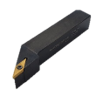

Question 8
MVLNR : 2 de suite sur 3

MVLNR — Ø charioté : 5/8 po
Chariotage finition · 1 dent
Insert de carbure de tungstène
RPM max : 3000 · outil de finition
Insert de carbure de tungstène
RPM max : 3000 · outil de finition
P
Acier non allié · groupe 2
C > 0.25 … ≤ 0.55 % · Recuit
190 HB · ex. AISI 1045
190 HB · ex. AISI 1045
Questionnaire
Progression
MCLNR
MVLNR
Lame à tronçonner
Barre à fileter
… et 5 autres outils